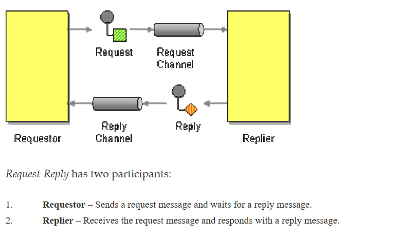

大规模仿真系统通信实现
Contents
本文主要讲解一下大规模仿真系统通信是如何实现的。
大规模仿真系统作为一个典型的server-agent 分布式服务，需要借助一个集中式的消息通信系统，实现一些任务的配置和下发。在写这个项目的时候参考了一本比较古老的书：
nats消息中间件
我们选择了nats作为消息中间件。nats 作为消息中间件有如下好处：
-
轻量级：NATS设计简单，轻量级，易于部署和运维，占用资源较少。
-
高性能：NATS具有低延迟，高吞吐量的性能特性，可满足高并发、高吞吐量的需求。
-
可扩展性：NATS支持水平扩展，可通过集群方式实现高可用性和负载均衡。
-
多语言支持：NATS支持多种编程语言，包括Java、Python、Go、JavaScript等，可灵活适配各种应用场景。
-
安全性：NATS支持TLS加密传输，可保证数据安全性。
-
云原生支持：NATS天生支持云原生架构，可轻松部署在云环境中，如Kubernetes等。
nats是go编写的，单个文件部署非常方便。同时，它的性能又非常好，主要特点为：
-
低延迟：NATS的延迟非常低，通常在微秒级别，适合处理对延迟敏感的应用。
-
高吞吐量：NATS在保持低延迟的同时，能够处理高并发的消息流量，能够满足高吞吐量的应用需求。
-
异步处理：NATS使用异步IO和事件驱动的设计模式，能够高效地处理大量的并发请求。
-
轻量级：NATS是一个轻量级的消息中间件，占用资源非常少，适合低配服务器或者边缘设备等场景。
-
消息传输的可靠性：NATS采用了基于TCP的传输协议，确保消息的可靠传输，同时还支持消息ACK机制，可确保消息到达并被消费。
我们的消息模型如下：
server 通过nats 发送消息，同时注册一个reply主题，agent服务处理完成之后向reply 主题投送一个ok 信息即可。
server 端注册一个reply topic：
|
|
client 回复，这个在EIP中称为是Document Message。
|
|
这个模式在EIP中也出现过：

消息格式
下面讲解一下消息的格式
消息格式定义为如上所示
|
|
主要包括 Action\DstNode\CorrelationID和payload 字段。
其中，将payload 设计为map[string]interface{} ，这样可以把具体的业务消息塞入到payload 中。
如上图的例子所示，当我希望下发一个icmp 监控的时候，我可以把action 设置为applyIcmp，DstNode为希望配置的节点。CorrelationID（Correlation Identifier） 设置为UUID，用于后续问题的排查。Payload 的里面是具体icmp监控配置下发的业务信息。
在client端收取到消息之后，先会进行反序列化：
|
|
然后根据Action中的类型，执行具体的逻辑。
这边我们使用了策略模式，实现新增策略方法时不会影响到这一段逻辑。
|
|
Author smasterfree
LastMod 2023-09-05